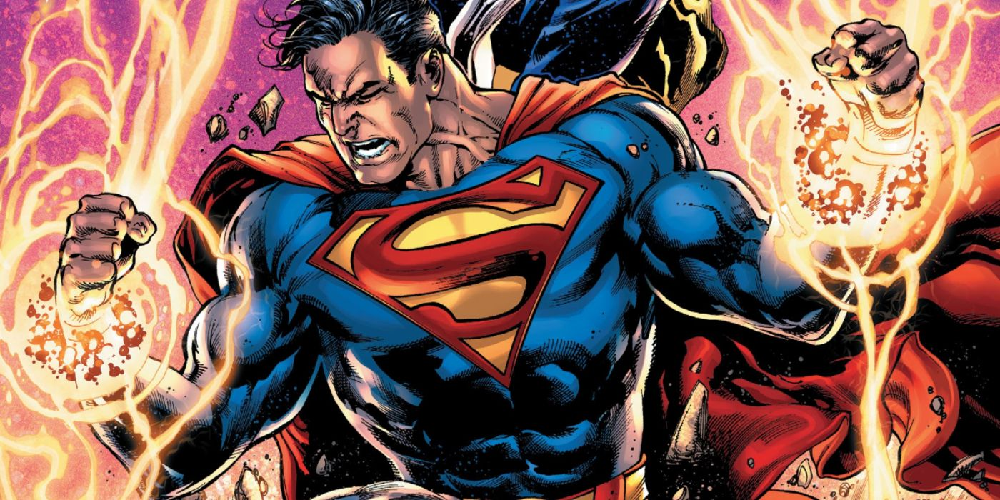

About Superman
Superman is superhero born on the planet Krypton and was given the name Kal-El at birth. As a baby, his parents sent him to Earth in a small spaceship moments before Krypton was destroyed in a natural cataclysm. His ship landed in the American countryside, near the town of Smallville. He was found and adopted by farmers Jonathan and Martha Kent, who named him Clark Kent. Clark developed various superhuman abilities, such as incredible strength and impervious skin. His adoptive parents advised him to use his abilities for the benefit of humanity, and he decided to fight crime as a vigilante. He is one of the founding members of the Justice League.
Superman fights for his city.
Characteristics
- He has super Strength, Speed; laser and Xray vision, which he uses to fight crime.
- Having lost his home world of Krypton, Superman is very protective of Earth, and especially of his family and friends.
- Superman is commonly seen as a brave and kind-hearted hero with a strong sense of justice, morality, and righteousness. He adheres to an unwavering moral code instilled in him by his adoptive parents.
Friends
Superman has many friends in the Justice League: